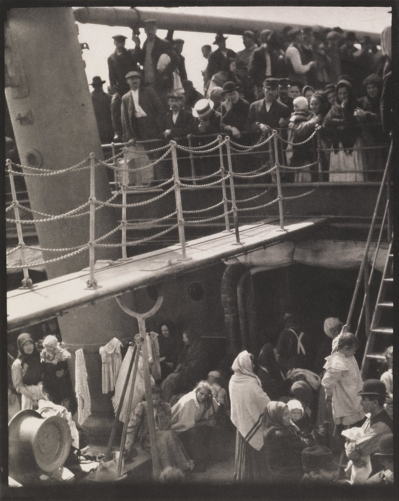

水平甲板把画面分层；舷梯从右上斜切中央，把视线带入下层人群。圆形舱帽与矩形设备彼此咬合，人物像小音符散落其间。
无彩色明度配色：暖纸灰统领，炭黑停顿，旧象牙白只负责方向。硬质日光落在通道而非脸上。
1907 年，Stieglitz 在驶往欧洲的 Kaiser Wilhelm II 上拍下底片。摄影凹版把影调转成纸上油墨，让暗部拥有颗粒、触感与印刷结构。
事实：Alfred Stieglitz（1864–1946）是推动摄影进入现代艺术讨论的重要摄影家、出版人与展览组织者。本作数年后才被反复出版并确立为代表作。
上句及阶层联想为“每日艺术”的观看分析，并非作者原话或对每位乘客身份的断言。
Alfred Stieglitz，The Steerage，1907；摄影凹版。图像：Wikimedia Commons 文件页，4150 × 5203，Public Domain Mark 1.0；作品资料：芝加哥艺术博物馆、大都会艺术博物馆。图片版权归原作者及相关权利人；跨法域请复核。赏析为“每日艺术”原创分析。